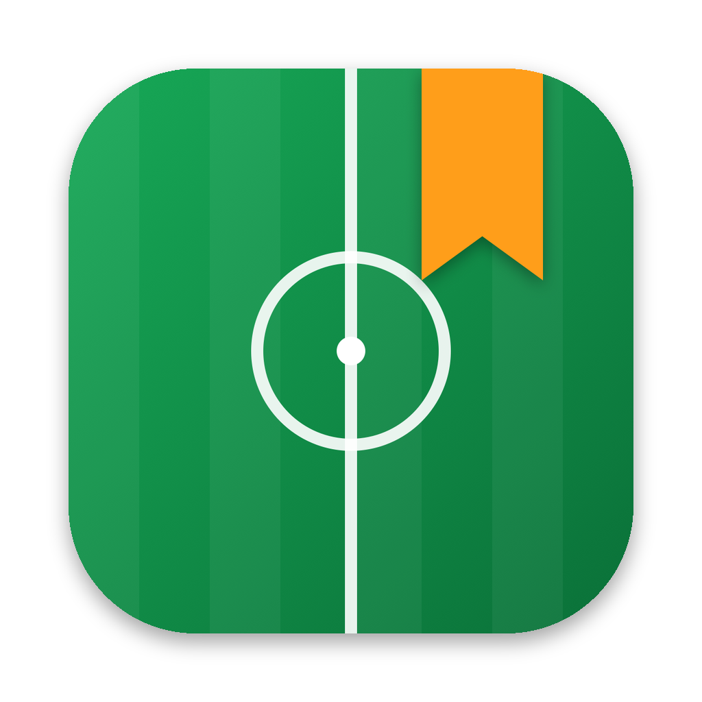
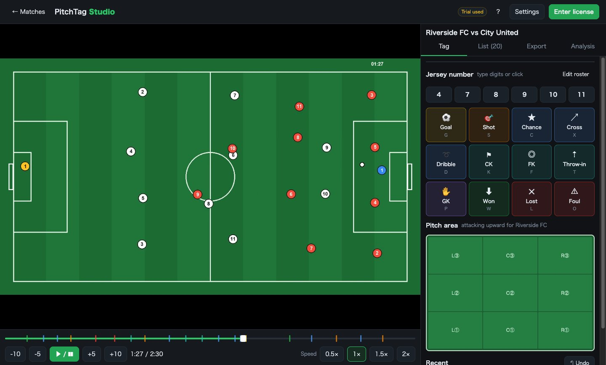
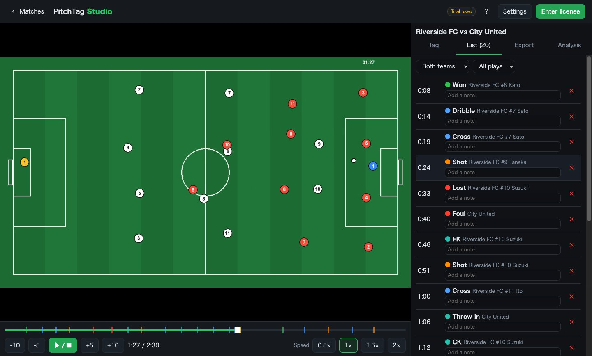
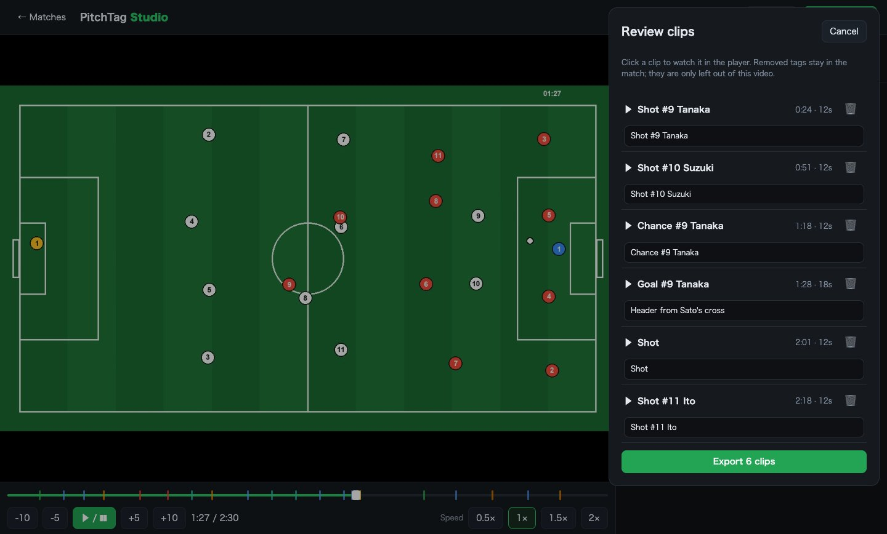
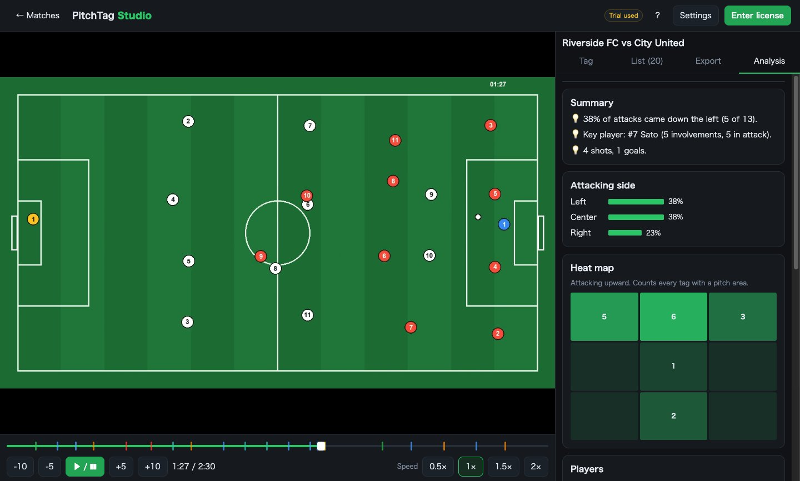

PitchTag StudioTag every play with one key, export highlight reels and player clips, and let AI find the goals — all on your own computer. Buy once. No subscription.
キー1つでプレーをタグ付けし、ハイライト動画や選手ごとのプレー集を書き出せます。ゴールなどの見せ場はAIが探します。すべてあなたのパソコンの中で動きます。買い切りで、サブスクではありません。

Type the jersey number, press G for goal, S for shot… Tags are saved a second before your keypress, so you never miss the moment.
背番号を打って、Gでゴール、Sでシュート…。押した1秒前の時刻で記録されるので、決定的な瞬間を逃しません。
By play, by player, your own picks or AI moments. Review every clip, edit captions, export in 720p, 1080p, 4K or original.
プレー別・選手別・自分で選んだ場面・AIの場面から。クリップを1つずつ確認してテロップを直し、720p〜4K・元の画質で書き出せます。
Crowd and bench reactions, the ball and how players gather — analysed on your computer for free. Optional Gemini mode for higher accuracy and YouTube links.
観客やベンチの反応、ボール、選手の集まり方をパソコン内で無料解析。より高精度なGeminiモード（YouTubeのURLにも対応）も選べます。
Filmed each half separately? Add both files and they play as one 100-minute timeline. Drag the timeline to scrub, change speed, skip ±5/±10 s.
前半・後半を別々に撮っても大丈夫。ファイルを追加すれば、合計100分まで1本のタイムラインとして再生します。タイムラインのドラッグ、速度変更、±5・±10秒移動に対応。

Watch each clip, drop the ones you don't need and fix the captions. Then save a single MP4 to share with your team.
クリップを再生して、不要な場面を外し、テロップを直してから、1本のMP4に書き出してチームで共有できます。

Attacking sides, a pitch heat map, player involvement and the plays that led to goals — straight from your tags. Add an AI-written report with your Gemini key.
攻撃サイドの割合、ヒートマップ、選手の関与、失点前のプレーをタグから自動集計。Geminiキーがあれば、AIが文章のレポートも書きます。

Windows may show "Windows protected your PC" for new apps: click "More info" → "Run anyway". The Mac version is signed and notarized by Apple.
Windowsでは新しいアプリに「WindowsによってPCが保護されました」と表示されることがあります。「詳細情報」→「実行」を押してください。Mac版はAppleの公証済みです。
No. Everything runs on your computer. Only if you turn on the optional Gemini mode is a low-resolution copy sent to Google with your own API key, and only for the analysis.
いいえ。すべてパソコン内で処理します。任意のGeminiモードをオンにした場合だけ、解析のために低解像度のコピーをあなた自身のAPIキーでGoogleに送ります。
A free key from Google AI Studio (aistudio.google.com/apikey). The free tier is usually enough for a few matches a day. It's optional — local AI works without it.
Google AI Studio（aistudio.google.com/apikey）で無料で取得できるキーです。通常は無料枠で1日数試合は解析できます。任意で、なくてもパソコン内のAIは使えます。
Yes for tagging, analysis and AI highlights (Gemini mode). Highlight videos can't be exported from YouTube — use a video file for that.
タグ付け・分析・AIハイライト（Geminiモード）に使えます。ハイライト動画の書き出しは、パソコン内の動画ファイルが必要です。
It finds candidate moments from crowd/bench reactions, the ball and player movement. It works best with a steady camera and audible reactions. You always review clips before exporting.
観客・ベンチの反応、ボール、選手の動きから候補の場面を探します。カメラが安定していて、歓声が入っている動画で最もよく働きます。書き出す前に必ず場面を確認できます。
Try the free match first. If it doesn't work for you after buying, email us within 14 days for a full refund.
まず無料の1試合でお試しください。購入後14日以内であれば、メールで全額返金に応じます。